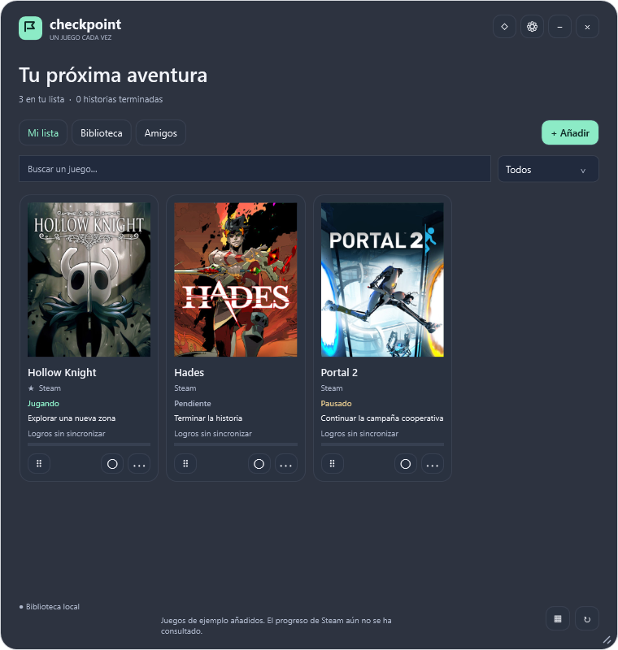
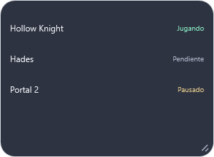

Una lista para cada momento.
Organiza varias listas. Separa lo que estás jugando, lo que has terminado y lo que puede esperar.
PendienteHistoria terminada
UN JUEGO CADA VEZ
Todos tus juegos. Tus objetivos. Tu próxima aventura.
Un lugar para seguir jugando
a tu ritmo.
Tu biblioteca, sin necesidad de crear una cuenta.

DALE UN LUGAR A CADA JUEGO
De ese juego que llevas meses queriendo empezar al último logro que te falta. Ordena tu colección y decide qué viene después.
Organiza varias listas. Separa lo que estás jugando, lo que has terminado y lo que puede esperar.
Guarda objetivos, tareas y notas en la ficha de cada juego. Retoma la partida sabiendo exactamente dónde te quedaste.
Carátulas, vista de lista o cuadrícula. Elige cómo ver tus juegos y cambia de perspectiva cuando quieras.
CADA PARTIDA CUENTA
Vincula Steam para importar tu biblioteca y consultar tus logros. Checkpoint actualiza el progreso al abrir la app y periódicamente.
Los datos de juego de Steam deben ser públicos.
Conecta con tus amigos mediante tu código de Checkpoint y comparte tus avances. Tú eliges qué juegos mantener privados.
La cuenta de Checkpoint es opcional para tu biblioteca y necesaria para amigos.
CHECKPOINT PARA WINDOWS
Una ventana translúcida. Un modo miniatura. Tus logros pendientes al detectar un juego. Un compañero que encuentra su sitio junto a tus partidas.
Conseguir Checkpoint para Windows Requisitos y notas de instalación
TU BIBLIOTECA, A TU RITMO
Tu biblioteca se guarda en este navegador. No necesitas una cuenta para organizar tus juegos.
Exporta copias JSON para conservar tus datos o trasladarlos. La biblioteca privada no se sincroniza automáticamente entre la web y Windows.
Leer la guía webEL SIGUIENTE CHECKPOINT ES TUYO
En tu navegador o en Windows. Tú eliges.